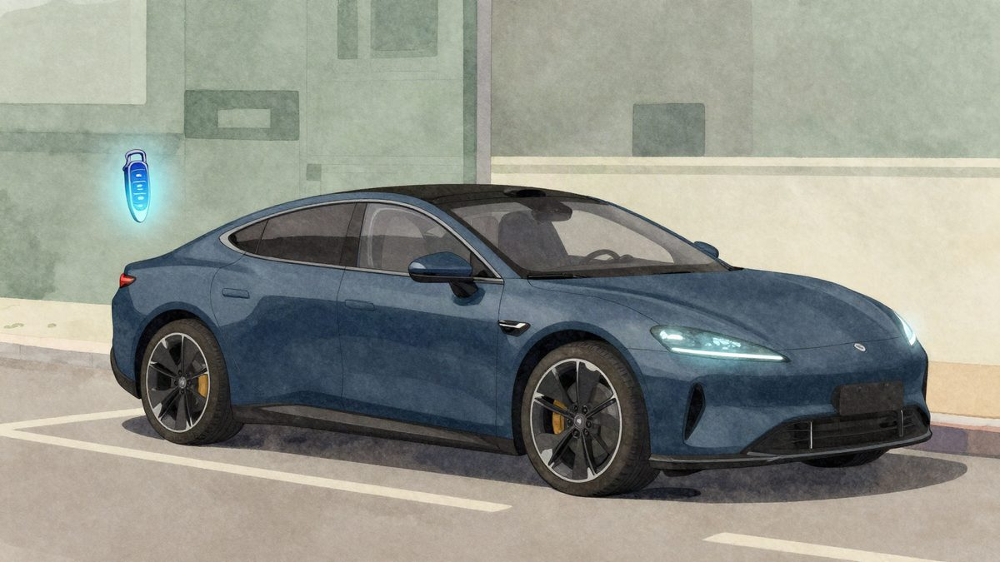

Xiaomi OTA 1.20: iPhone postaje ključ automobila, a gradski asistent se otključava već nakon 100 km

Xiaomi je 27. studenoga počeo slati OTA update 1.20 vlasnicima modela Pengcheng N70 i N90. Update donosi digitalni ključ za iPhone, preimenovani sustav pomoći pri vožnji, čija se gradska navigacija otključava nakon 100 km, te novu stranicu za zvuk u kabini. Hoće li update stići na europsko tržište, nije rečeno.
Xiaomi je 27. studenoga počeo slati OTA update 1.20 svim vlasnicima modela Xiaomi Pengcheng N70 i N90. Za vlasnike iPhonea najvažnija je novost digitalni ključ, pa telefon može služiti kao ključ vozila. Update mijenja i sustav pomoći pri vožnji te kabinu.
Pomoć pri vožnji
Dosadašnja "end-to-end pomoć pri vožnji" sada se zove "Full-Domain Navigation Assist" (kineski naziv: 全域领航辅助). Xiaomi tvrdi da je doradio gradsku i autocestovnu navigacijsku pomoć.
Gradska navigacijska pomoć otključava se nakon 100 km vožnje, pa novi vlasnici do nje dolaze brže nego prije. Xiaomi tvrdi da su ubrzanje i kočenje u novoj verziji ravnomjerniji, da su promjene i odabir trake točniji te da je upravljanje u uzdužnom i poprečnom smjeru kod prepreka kontinuiranije.
U Xiaomijev HAD sustav uvedeni su "lanac uzročnosti" (causal chain) i world model koji radi u samom vozilu. Sustav tako povezuje podatke o prijašnjim prometnim situacijama s procjenom ponašanja drugih sudionika u prometu. Xiaomi tvrdi da bi to trebalo poboljšati odluke u složenom prometu.
Kabina
U kabini je dodana zasebna stranica za zvuk. Na njoj podešavaju se zvučni efekti, uključuje karaoke bez mikrofona i upravlja transparentnim načinom rada.
Promijenjena je i logika pamćenja načina za spor promet. Kad je vlasnik prijavljen u svoj račun, vozilo pamti njegove postavke. Bez prijave se nakon gašenja vozila vraća na zadani način "sporo kretanje".
Ostali modeli
Xiaomi je najavio da će novi HAD sustav stizati i na ostale modele: prvu generaciju SU7 Pro, SU7 Max i SU7 Ultra te cijelu novu generaciju SU7 i sve verzije YU7. Točni termini ovise o službenim obavijestima Xiaomija.
Izvor: MyDrivers (快科技)
Povezani članci
 New York zabranio pretplate za grijanje sjedala i druge funkcije koje su već ugrađene u auto24. studenoga 2026.
New York zabranio pretplate za grijanje sjedala i druge funkcije koje su već ugrađene u auto24. studenoga 2026. Vozač u Qingdaou na autocesti legao spavati uz pomoć sustava za vožnju, u autu mu je bila obitelj15. studenoga 2026.
Vozač u Qingdaou na autocesti legao spavati uz pomoć sustava za vožnju, u autu mu je bila obitelj15. studenoga 2026. Xiaomi tvrdi da Pengcheng N70 ostaje stabilan i kad na 160 km/h puknu dvije gume14. studenoga 2026.
Xiaomi tvrdi da Pengcheng N70 ostaje stabilan i kad na 160 km/h puknu dvije gume14. studenoga 2026.